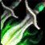
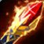

Armes utilisables par classe
Quelles armes chaque classe peut porter dans WoW Forever, et où apprendre celles qui te manquent. Forever apporte quelques nouveautés par rapport au jeu d'origine : haches pour le voleur, armes à deux mains de base pour le chaman.
📅 Mise à jour le 22 novembre 2026🛠 Patch 1.60.1.71037
 Voleur | Chaman |  Mage | |||||||
|---|---|---|---|---|---|---|---|---|---|
| Une main | |||||||||
| Dagues | ✓ | – | ✓ | ✓ | ✓ | ✓ | ✓ | ✓ | ✓ |
| Épées à une main | ✓ | ✓ | ✓ | ✓ | – | – | ✓ | ✓ | – |
| Haches à une main | ✓ | ✓ | ✓ | ✓Nouveau dans Forever | – | ✓ | – | – | – |
| Masses à une main | ✓ | ✓ | – | ✓ | ✓ | ✓ | – | – | ✓ |
| Armes de pugilat | ✓ | – | ✓ | ✓ | – | ✓ | – | – | ✓ |
| Deux mains | |||||||||
| Épées à deux mains | ✓ | ✓ | ✓ | – | – | – | – | – | – |
| Haches à deux mains | ✓ | ✓ | ✓ | – | – | ✓Acquis de base | – | – | – |
| Masses à deux mains | ✓ | ✓ | – | – | – | ✓Acquis de base | – | – | ✓ |
| Armes d'hast | ✓ | ✓ | ✓ | – | – | – | – | – | ?Annoncé, à confirmer |
| Bâtons | ✓ | – | ✓ | – | ✓ | ✓ | ✓ | ✓ | ✓ |
| Distance | |||||||||
| Arcs | ✓ | – | ✓ | ✓ | – | – | – | – | – |
| Arbalètes | ✓ | – | ✓ | ✓ | – | – | – | – | – |
| Armes à feu | ✓ | – | ✓ | ✓ | – | – | – | – | – |
| Armes de jet | ✓ | – | ✓ | ✓ | – | – | – | – | – |
| Baguettes | – | – | – | – | ✓ | – | ✓ | ✓ | – |
| Défense et style | |||||||||
| Bouclier | ✓ | ✓ | – | – | – | ✓ | – | – | – |
| Ambidextrie (deux armes) | ✓Niveau 20 | – | ✓Niveau 20 | ✓Niveau 10 | – | ?À confirmer | – | – | – |
✓ utilisable · – impossible · ? pas encore confirmé. Le bouclier et l'ambidextrie ne sont pas des armes, mais ils comptent dans le choix de ton équipement.
Comment ça marche
- Chaque personnage commence avec quelques armes, selon sa classe et parfois sa race. Par exemple, un chasseur nain ou tauren débute avec les armes à feu, un chasseur humain, orc, elfe de la nuit ou troll avec les arcs.
- Pour porter un autre type d'arme, il faut l'apprendre chez un maître d'armes : 10 pièces d'argent par arme, 1 pièce d'or pour les armes d'hast, à partir du niveau 20.
- Une arme apprise commence à 1 en compétence : tes coups ratent souvent au début. La compétence monte en frappant des monstres avec cette arme, jusqu'à 5 points par niveau de personnage.
- Dans Forever, aucune race n'a de bonus d'arme : les humains ont à la place Impitoyable, +1 % de chances de critique avec toutes les armes.
- Les baguettes sont acquises dès le départ pour le prêtre, le mage et le démoniste. Le druide a aussi le combat farouche, qui monte en forme d'ours et de félin.
Les maîtres d'armes
| Faction | Ville | Maître d'armes | Position | Enseigne |
|---|---|---|---|---|
| Alliance | Hurlevent | Woo Ping Arsenal de Weller, quartier commerçant | 63.8, 69.0 | Dagues, épées à une et deux mains, armes d'hast, bâtons, arbalètes |
| Alliance | Forgefer | Buliwyf Stonehand Quartier militaire, même boutique que Bixi | vers 62, 89 | Haches et masses à une et deux mains, armes de pugilat, armes à feu |
| Alliance | Forgefer | Bixi Wobblebonk Quartier militaire | 62.2, 89.6 | Dagues, arbalètes, armes de jet |
| Alliance | Darnassus | Ilyenia Moonfire Terrasse des guerriers | 57.6, 46.7 | Dagues, armes de pugilat, bâtons, arcs, armes de jet |
| Horde | Orgrimmar | Sayoc Vallée de l'Honneur | 81.5, 19.6 | Dagues, armes de pugilat, haches à une et deux mains, bâtons, arcs, armes de jet |
| Horde | Orgrimmar | Hanashi Vallée de l'Honneur, même boutique que Sayoc | 81.5, 19.6 | Haches à une et deux mains, bâtons, arcs, armes de jet |
| Horde | Les Pitons-du-Tonnerre | Ansekhwa Bas de la mesa | 40.9, 62.7 | Masses à une et deux mains, bâtons, armes à feu |
| Horde | Fossoyeuse | Archibald Quartier de la Guerre | 57.3, 32.8 | Dagues, épées à une et deux mains, armes d'hast, arbalètes |
Un maître de l'autre faction ne t'enseignera rien. On ne sait pas encore où le voleur apprend les haches à une main, ni où le chasseur apprend les dagues : si tu as la réponse en jeu, dis-le-nous.
Sources : Warcraft Tavern et RankedBoost (novembre 2026), données du jeu pour les compétences de départ.